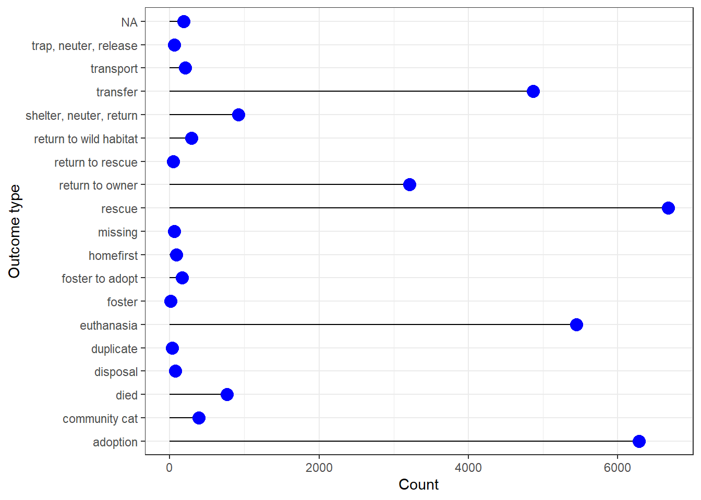

HW10
2025-05-01
Downloading the Long Beach Animal Shelter dataset from TidyTuesday. This Dataset incluedes information about an animal shelter in Florida.
#libraries
library(ggplot2)
library(ggthemes)## Warning: package 'ggthemes' was built under R version 4.4.3library(patchwork)## Warning: package 'patchwork' was built under R version 4.4.2library(waffle)## Warning: package 'waffle' was built under R version 4.4.3library(ggridges)## Warning: package 'ggridges' was built under R version 4.4.3library(ggbeeswarm)## Warning: package 'ggbeeswarm' was built under R version 4.4.3library(GGally)## Warning: package 'GGally' was built under R version 4.4.3## Registered S3 method overwritten by 'GGally':
## method from
## +.gg ggplot2library(ggpie)## Warning: package 'ggpie' was built under R version 4.4.3library(ggmosaic)## Warning: package 'ggmosaic' was built under R version 4.4.3##
## Adjuntando el paquete: 'ggmosaic'## The following object is masked from 'package:GGally':
##
## happylibrary(scatterpie)## Warning: package 'scatterpie' was built under R version 4.4.3## scatterpie v0.2.4 Learn more at https://yulab-smu.top/library(DescTools)## Warning: package 'DescTools' was built under R version 4.4.3library(treemap)## Warning: package 'treemap' was built under R version 4.4.3library(tidyverse)## Warning: package 'stringr' was built under R version 4.4.2## Warning: package 'lubridate' was built under R version 4.4.2## ── Attaching core tidyverse packages ──────────
## ✔ dplyr 1.1.4 ✔ readr 2.1.5
## ✔ forcats 1.0.0 ✔ stringr 1.5.1
## ✔ lubridate 1.9.4 ✔ tibble 3.2.1
## ✔ purrr 1.0.2 ✔ tidyr 1.3.1## ── Conflicts ───────── tidyverse_conflicts() ──
## ✖ dplyr::filter() masks stats::filter()
## ✖ dplyr::lag() masks stats::lag()
## ℹ Use the conflicted package (<http://conflicted.r-lib.org/>) to force all conflicts to become errorslibrary(hrbrthemes)## Warning: package 'hrbrthemes' was built under R version 4.4.3library(beeswarm)
library(treemapify)## Warning: package 'treemapify' was built under R version 4.4.3#Dataset
longbeach <- readr::read_csv('https://raw.githubusercontent.com/rfordatascience/tidytuesday/main/data/2025/2025-03-04/longbeach.csv')## Rows: 29787 Columns: 22
## ── Column specification ───────────────────────
## Delimiter: ","
## chr (15): animal_id, animal_name, animal_type, primary_color, secondary_col...
## dbl (2): latitude, longitude
## lgl (2): outcome_is_dead, was_outcome_alive
## date (3): dob, intake_date, outcome_date
##
## ℹ Use `spec()` to retrieve the full column specification for this data.
## ℹ Specify the column types or set `show_col_types = FALSE` to quiet this message.#cleaning script from the TigyTuesday
library(dplyr)
#install.packages("animalshelter")
library(animalshelter)##
## Adjuntando el paquete: 'animalshelter'
##
## The following object is masked _by_ '.GlobalEnv':
##
## longbeachlongbeach <- animalshelter::longbeach |>
dplyr::mutate(
was_outcome_alive = as.logical(was_outcome_alive),
dplyr::across(
c(
"animal_type",
"primary_color",
"secondary_color",
"sex",
"intake_condition",
"intake_type",
"intake_subtype",
"reason_for_intake",
"jurisdiction",
"outcome_type",
"outcome_subtype"
),
as.factor
)
) |>
dplyr::select(-"intake_is_dead")
#checking the variables
str(longbeach)## tibble [29,787 × 22] (S3: tbl_df/tbl/data.frame)
## $ animal_id : chr [1:29787] "A693708" "A708149" "A638068" "A639310" ...
## $ animal_name : chr [1:29787] "*charlien" NA NA NA ...
## $ animal_type : Factor w/ 10 levels "amphibian","bird",..: 4 9 2 2 3 8 2 7 3 4 ...
## $ primary_color : Factor w/ 76 levels "apricot","black",..: 74 16 41 74 2 2 2 38 2 29 ...
## $ secondary_color : Factor w/ 48 levels "apricot","black",..: NA 28 36 26 47 47 NA 2 NA NA ...
## $ sex : Factor w/ 5 levels "Female","Male",..: 1 5 5 5 1 3 5 5 5 4 ...
## $ dob : Date[1:29787], format: "2013-02-21" NA ...
## $ intake_date : Date[1:29787], format: "2023-02-20" "2023-10-03" ...
## $ intake_condition : Factor w/ 17 levels "aged","behavior mild",..: 8 15 13 10 13 15 10 16 16 1 ...
## $ intake_type : Factor w/ 12 levels "adopted animal return",..: 9 9 12 12 9 9 12 12 9 5 ...
## $ intake_subtype : Factor w/ 22 levels "aban field","aban shltr",..: 14 11 11 11 11 14 11 11 11 14 ...
## $ reason_for_intake: Factor w/ 57 levels "abandon","afraid",..: NA NA NA NA NA NA NA NA NA NA ...
## $ outcome_date : Date[1:29787], format: "2023-02-26" "2023-10-03" ...
## $ crossing : chr [1:29787] "[2600 BLK LONG BEACH BLVD, LONG BEACH CA, 90806" "`600 BLK E HARCOURT, LB 90805" "0 BLK GRAND AVE, LONG BEACH, CA 90803" "0 BLK TEMPLE AVE, LONG BEACH, CA 90803" ...
## $ jurisdiction : Factor w/ 25 levels "Cerritos","District1",..: 17 17 17 17 17 17 17 17 17 17 ...
## $ outcome_type : Factor w/ 18 levels "adoption","community cat",..: 6 11 6 16 11 1 6 11 11 11 ...
## $ outcome_subtype : Factor w/ 222 levels "2ndchanc@l","2ndchanck9",..: 98 144 104 119 123 211 98 144 123 NA ...
## $ latitude : num [1:29787] 33.8 33.9 33.8 33.8 33.8 ...
## $ longitude : num [1:29787] -118 -118 -118 -118 -118 ...
## $ outcome_is_dead : logi [1:29787] TRUE FALSE TRUE FALSE FALSE FALSE ...
## $ was_outcome_alive: logi [1:29787] FALSE TRUE FALSE TRUE TRUE TRUE ...
## $ geopoint : chr [1:29787] "33.8047935, -118.1889261" "33.8679994, -118.2009307" "33.7604783, -118.1480912" "33.7624598, -118.1596777" ...1.Waffle plot to see the proportions of animal type in the shalter
# Prepare data (Example: Count property types)
waffle_data <- longbeach %>%
count(animal_type) %>%
mutate(proportion = n / sum(n) * 100)
# Creating the waffle plot
ggplot(waffle_data, aes(fill=animal_type, values=proportion)) +
geom_waffle() +
theme_void()#### 2.Pie chart about the sex of the animals
pie_data<-longbeach %>%
count(sex)%>%
mutate(proportion = `n` / sum(`n`))%>%
mutate(labels = scales::percent(proportion))
#creating the pie chart
ggplot(pie_data, aes(x = "", y = proportion, fill = sex)) +
geom_col(color = "black") +
geom_label(aes(label = labels),
position = position_stack(vjust = 0.5),
show.legend = FALSE) +
guides(fill = guide_legend(title = "Sex")) +
scale_fill_brewer(palette="Set1") +
coord_polar(theta = "y") +
theme_void()#### 3.Treemap with information about the reason for animal intake such as stray capture, wildlife captures, adopted but returned, owner surrendered etc.
tree_data<-longbeach %>%
count(intake_type)%>%
mutate(proportion = `n` / sum(`n`))%>%
mutate(labels = scales::percent(proportion))
ggplot(tree_data, aes(area = n, fill =intake_type)) +
geom_treemap() #### 4.Lolipop plot about Outcome associated with animal - adopted,
died, euthanized etc.
#### 4.Lolipop plot about Outcome associated with animal - adopted,
died, euthanized etc.
loli_data<-longbeach %>%
count(outcome_type)
ggplot(loli_data, aes(x=outcome_type, y=n)) +
geom_segment( aes(xend=outcome_type, yend=0)) +
geom_point( size=4, color="blue") +
coord_flip() +
theme_bw()+
xlab("Outcome type") +
ylab("Count")